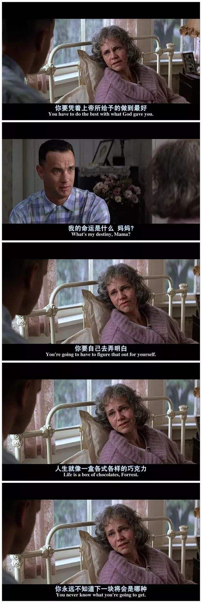
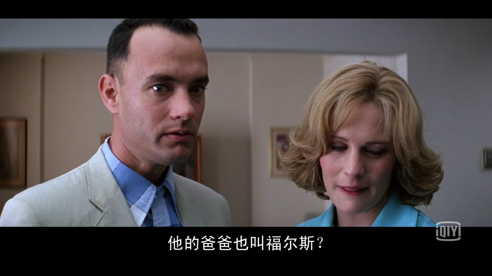
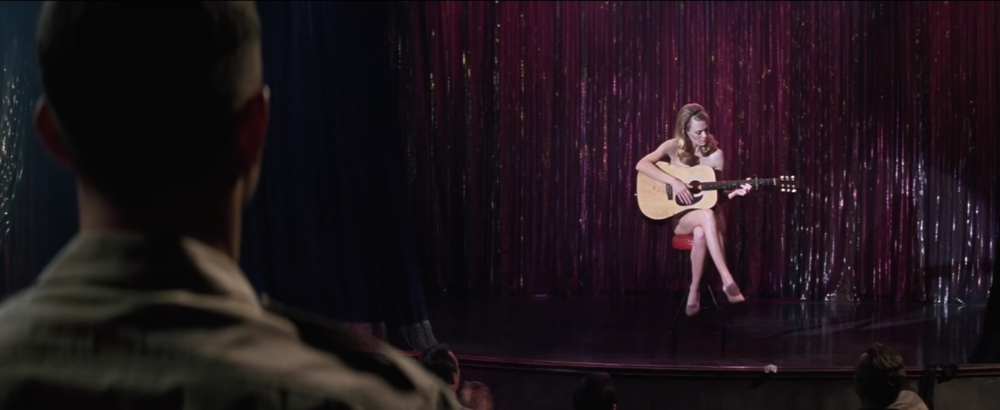

我对阿甘的记忆
2018-11-21
”Life’s like a bar of chocolate.You’d never know what you’re gonna get.” 阿甘的妈妈临走前对阿甘说了这句话。’阿甘好幸运,有这样好的一个妈妈’,这是我第一次看这部电影时就有的想法。阿甘的妈妈在我眼里是一位特别善良也特别懂教育的母亲，在阿甘小的时候她告诉阿甘，’你和普通人是一样的’。我当时好羡慕这样的母亲，因为对阿甘有一种无条件的肯定，仿佛在告诉自己的孩子：即使你什么都不做，即使你不完美，但你仍然是一个有尊严有价值的存在。可能我这么在意这一点，是因为想到了自己从小接受的家庭教育吧。我妈妈就是典型的’传统家长’，从来不会指出我的优点，因为怕我骄傲。但是吝于赞美却不代表吝于批评，在我犯错的时候一定会严厉的惩罚，在我遇到不会做的事或者没做好的时候问我为什么×××（邻居或者其他家的孩子）能做到。如果我考第二，问我为什么不能考第一？所以我从小就很累，需要做得很好，超过’别人家的孩子’才能得到来自妈妈的肯定。这听来可能有点悲惨，但确实如此。这让我在很长一段时间内没有自我价值感，不能客观地评价自己的优点和缺点。所以看这部电影的时候很有感触。阿甘的妈妈在眼里很智慧，还有她在面对死亡时说的那段话。她坐在床上，阿甘进来问她怎么了。她说:”I’m dying ,Forrest”,就像在说一件很平常，平常到不能再平常的一件事情，她的脸上很祥和，没有任何痛苦。甚至还安慰阿甘，“死亡只是生命的一部分”，她说：‘可能我注定要成为你的妈妈，所以我就尽力把这件事做好…’。虽然我没有阿甘这么幸运，但现在的我也不会像小时候埋怨自己的父母和家庭，越长大也更能理解我妈妈，我只是在想，或许以后如果我成为了一个妈妈一定会尽力做好。

距离第一次看阿甘正传已经很久了，很多记忆已经模糊不清。最深刻的记忆除了刚才提到的阿甘的妈妈，就是对阿甘这个人的理解了。已经忘了是谁问过阿甘’你长大像成为什么样子？’，当阿甘回答’我不能做自己吗？’的时候，我就在心里重新定义阿甘这个人的人物形象。他真的如电影里的其他人说的那样是傻子吗？我觉得做自己需要很大的勇气。选择做自己也是一种智慧吧。可能当时的我也正处在人生的一个迷茫的阶段，外面的世界纷乱复杂，自己却不知道能做什么、想做什么，未来又会是什么样子…内心有疑问又得不到结果的时候我只好选择随波逐流，让大多数人的选择来帮我做决定吧…后来也才发现，大多数的人想做的也不一定是我的选择，所以到最后回归到自我，选择听从自己的内心。说来容易，但这却是一段漫长的心路历程。接着往下看电影，发现阿甘对朋友、对丹中尉的感情，还有对珍妮的感情，跟着阿甘走完他的大半生以后。我觉得阿甘其实不是一个傻子，但是现实中应该不会有这样的人了。因为他做事认真、对待朋友真诚、对待感情专一都到了一种极致的地步，就是已经单纯、善良、美好到了在其他人眼中有点傻，在真实中几乎不太可能存在的地步！也就是所谓的老实人吧，在现实中这种人会很惨，被利用、被辜负、被欺骗…虽然，我也明白每个人都有自己的私心，有各自的需求，人之常情。但还是被阿甘的很多美好品质打动。我觉得如果有一天我遇到一个真诚、认真对待我的朋友，我也会回报以这样的真心。知己难寻。看完电影以后我就很喜欢阿甘，也很想遇见类似这样美好的人！

这部电影我看了两次，如果说第一次看是为了阿甘，那么第二次看就是为了珍妮。她在一个酒吧里，全裸着身体抱着吉他，唱着这首民谣。即使台下那些讨厌的男的只是想看她的裸体，但她认真地唱着歌，眼里有很多迷茫和悲伤，也有期待。

Jenny小时候被无良的父亲性侵，一直想逃离父亲的魔掌。她和阿甘躲在玉米地里，祈祷能变成一只鸟飞走。成年后的她确实远离家乡，四处漂泊，居无定所。漂泊大半生后，终于回到了那个小房子前… 我觉得我的语言太苍白无力了，引用一个知乎上的回答来表达我想说的吧。这是我最赞同的关于Jenny的说法。
https://www.zhihu.com/question/19736701/answer/259446642